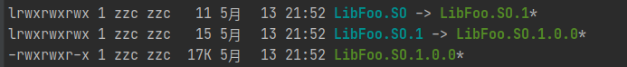
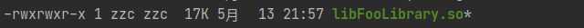

使用 CMake 生成动态库/静态库
[toc]
先看例子
废话不多说，上 CMakeLists.txt
cmake_minimum_required(VERSION 3.16)
project(FooLibrary VERSION 1.0.0)
set(CMAKE_CXX_STANDARD 11)
add_library(${PROJECT_NAME} SHARED library.cpp library.h)
是的，就是这么简单
简单解释一下
add_library 语法
add_library(<name> [STATIC | SHARED | MODULE]
[EXCLUDE_FROM_ALL]
source1 [source2 ...])
<name> 指定生成的库文件名称，会自动加上前缀和后缀
STATIC 生成静态库
SHARED 生成动态链接库
MODULE 这个生成的库注重于动态加载，而不是编译链接(官网说的)，但是我实测和 SHARED 没什么区别
然后后面就是源码列表了哈
一些目前能想到的点
可以用 set_target_properties 设置一些东西，语法如下
set_target_properties(target1 target2 ...
PROPERTIES prop1 value1
prop2 value2 ...)
例举几个常用的 property
OUTPUT_NAME 这个可以改生成文件的名称
PREFIX 指定前缀
SUFFIX 指定后缀
VERSION 指定动态库版本
SOVERSION 指定 API 版本
设置上述变量的 CMakeLists.txt 如下
cmake_minimum_required(VERSION 3.16)
project(FooLibrary VERSION 1.0.0)
set(CMAKE_CXX_STANDARD 11)
add_library(${PROJECT_NAME} SHARED library.cpp library.h)
set_target_properties(${PROJECT_NAME} PROPERTIES
OUTPUT_NAME Foo
PREFIX Lib
SUFFIX .SO
VERSION ${CMAKE_PROJECT_VERSION}
SOVERSION ${CMAKE_PROJECT_VERSION_MAJOR})
可以看到此时生成的文件如下，为了演示，下面这个前缀后缀会怪异一点；看到这些软链接什么的应该很熟悉

再看看最开始那个 CMakeLists.txt 生成的文件对比一下

对外提供动态库
由于个人水平有限，文中若有不合理或不正确的地方欢迎指出改正